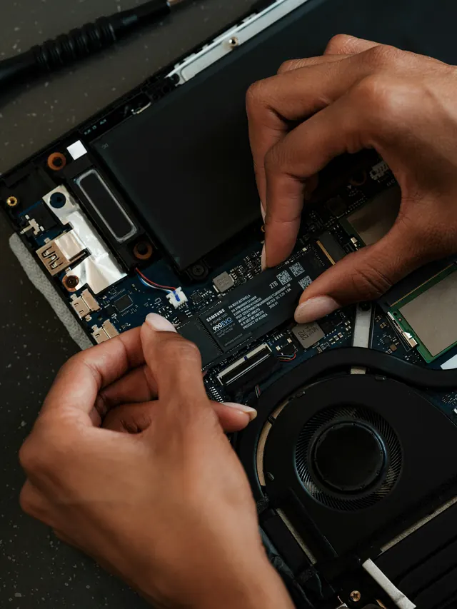
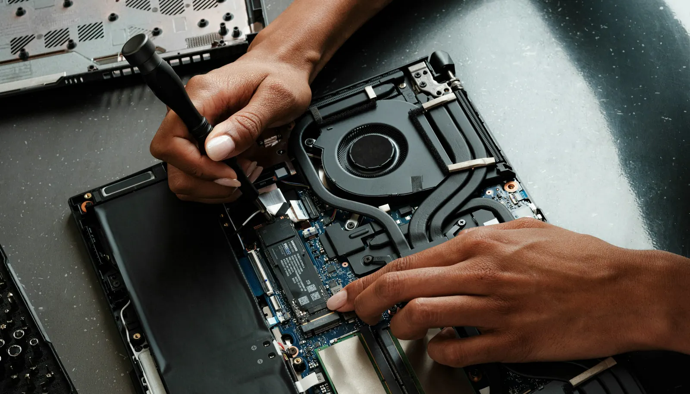
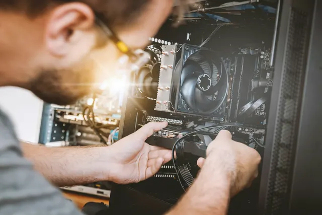
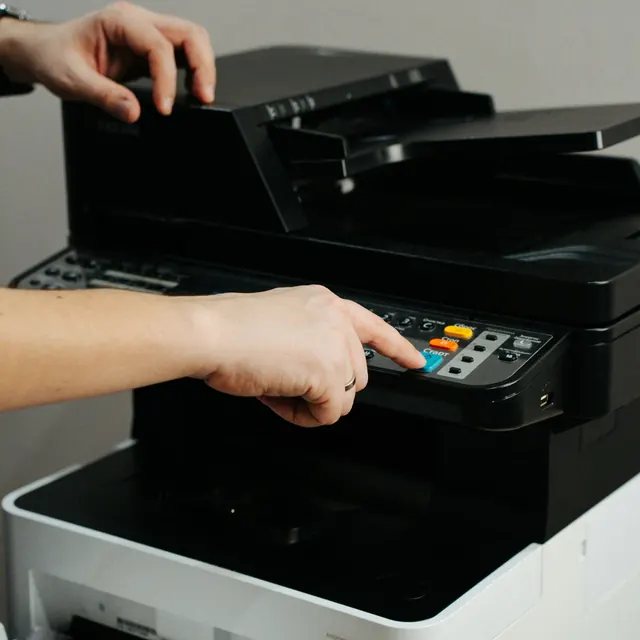
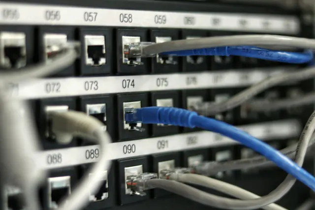
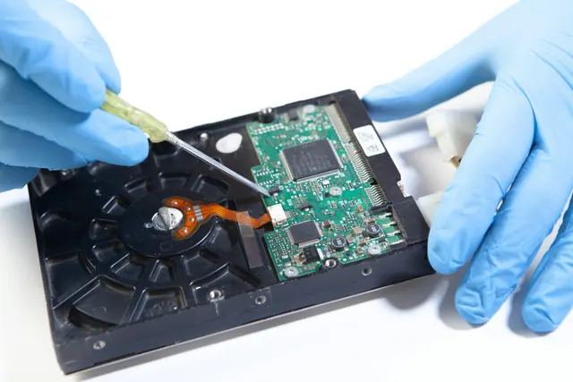
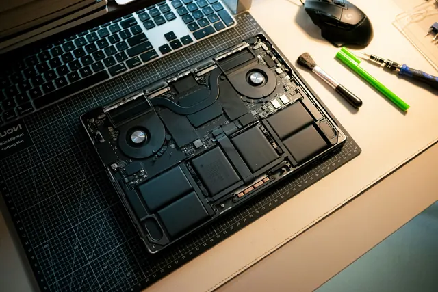
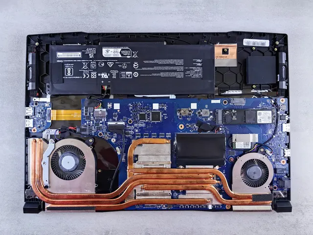
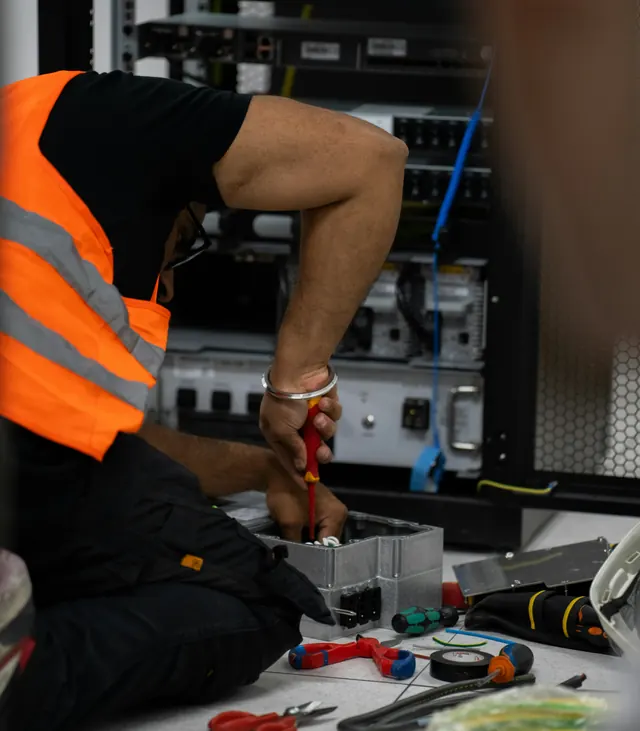

Laptopy i notebooki
- naprawa układów na płycie głównej (reballing BGA)
- gniazda zasilania i układy ładowania
- wymiana matryc, podświetlenia i inwerterów

Problem z komputerem? Dzwoń. Przyjedziemy do domu albo firmy, znajdziemy usterkę i ją naprawimy, a gdy trzeba, zabierzemy sprzęt do serwisu w Swarzędzu.
Diagnoza gratis, gdy naprawiamy sprzęt. Dojazd gratis do 20 km, gdy naprawa kosztuje od 100 zł. Telefonicznie pomagamy codziennie 8.00-20.00.
Komputery, laptopy, drukarki, sieci i oprogramowanie. Pomagamy firmom i osobom prywatnym w Swarzędzu, Poznaniu i całej Wielkopolsce.







Każdą naprawę wyceniamy indywidualnie, zanim się do niej zabierzemy.
Ceny netto z obecnego cennika RESCOMP. Wystawiamy faktury VAT.
Dla firm, które potrzebują serwisu na stałe, mamy pakiety dopasowane do liczby stanowisk i sposobu pracy.

Zapytaj o pakiet serwisowy dla swojej firmy.
Napisz do nasNajwygodniej naprawić sprzęt tam, gdzie pracuje. Do klientów w promieniu 20 km od Swarzędza dojeżdżamy bezpłatnie, jeśli naprawa kosztuje co najmniej 100 zł. W pozostałych przypadkach dojazd kosztuje 1 zł za kilometr, a przy poważniejszych naprawach ustalamy go indywidualnie.
Nie ma tu Państwa problemu? Proszę zadzwonić pod 603 043 430, podpowiemy przez telefon, co się dzieje.
Najczęściej winny jest system obciążony niepotrzebnymi procesami albo wadliwy podzespół. Poza dokładną diagnozą systemu sprawdzamy też ogólny stan komputera: głośność i temperaturę pracy oraz chłodzenie. Diagnoza jest u nas bezpłatna.
Zwykle to błąd konfiguracji routera albo wirus, choć czasem winna jest sama wtyczka. Sprawdzamy ustawienia routera i systemu, usuwamy luki i skanujemy komputer, żeby awaria się nie powtarzała.
Prawdopodobnie uszkodzony jest układ grafiki, chipsetu albo zasilania i trzeba otworzyć obudowę. Naprawiamy układy na płycie głównej (reballing), gniazda zasilania i słuchawkowe, wymieniamy matryce, świetlówki i inwertery. Na usługi udzielamy gwarancji.
Czasem do środka dostaje się ciało obce i trzeba prześledzić drogę papieru. Bywa też, że drukarka nie komunikuje się z systemem: sprawdzamy połączenia, udostępnianie drukarek sieciowych i sterowniki.
Przyczyną może być awaria podświetlenia, którą usuwamy, wymieniając świetlówki lub inwertery. Gdy monitor nie daje znaku życia albo wydaje niepokojące dźwięki, naprawiamy zasilanie. Sprawdzamy też wtyczki, gniazda i kartę graficzną.
W promieniu 20 km od Swarzędza dojazd jest bezpłatny, jeśli naprawa kosztuje co najmniej 100 zł. W innym wypadku 1 zł za kilometr. Przy poważniejszych naprawach cenę dojazdu ustalamy indywidualnie.
Za wykonaną usługę, dzięki której sprzęt znowu sprawnie działa. Nie płacą Państwo za diagnozę przy naprawie ani za dojazd, gdy naprawa przekracza 100 zł, a miejsce jest w promieniu 20 km od serwisu.
603 043 430
wsparcie telefoniczne 8.00-20.00
NIP 777-173-51-92